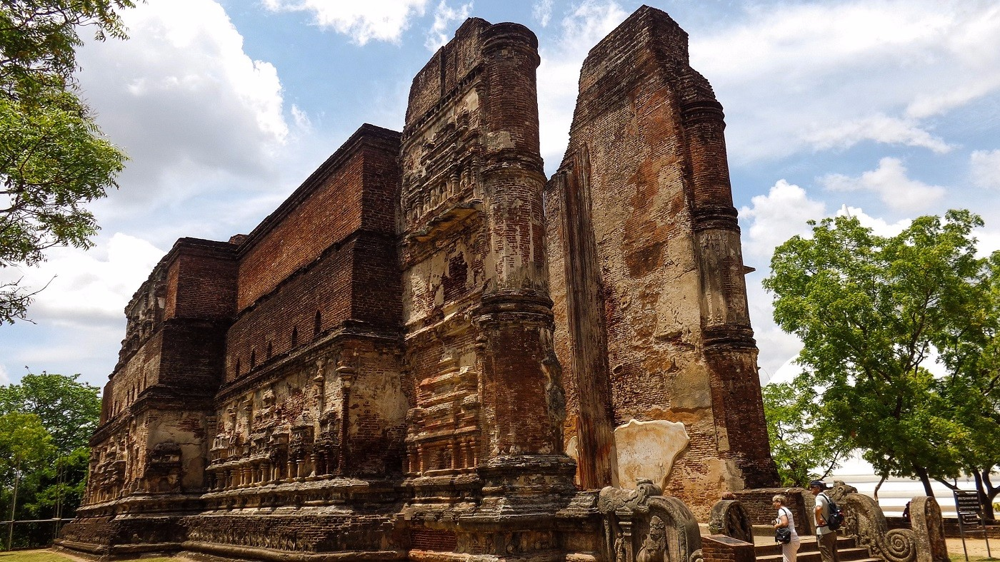

Lankathilaka-Vehera
Polonnaruwa Lankathilaka Image House is a monolithic Buddha image house built by king Parakramabahu (1153-1186) lying on the South of Kiri Vehera. The building is complete made out of bricks and the outer walls are covered with elaborate designs and carvings. The Buddha statue is also completely made out of clay bricks and it has been 41 feet in height. Specially made flat bricks have been used to build this statue and today the portion above the shoulder is destroyed. At the entrance to the Lankathilaka building is two massive pillars made from bricks. The tallest one is 58 feet in height. It is thought that these pillars would have been at least twice as tall this before destruction . According to chronicles this building has had five stories. This too is a part of the Ãlahana Privena. The two stairways to the upper floors inside the Lankathilaka stupa house are a unique design. The width of a step is only about 4 inches and each is about one feet tall. The stairways start from the Buddha Statue end and goes up towards the entrance end. This unique design is used so that the user find it impossible to climb these stairs the normal may we are used to. The only practical way to climb these stairs are sideways with your back to the walls. Nagini Sculpture on the balustrade Nagini Sculpture on the Balustade – image source : dlir.org This stupa house is also a fine example of a Gedi-Ge style building. The unique feature of this is vault type buildings are the roofs which are made primarily out bricks in a semi-spherical fashion or as an arch. Unfortunately the roof this building has been destroyed long time ago. The reason for designing this stairs in a way that it could be used only sideways is that the climber will never turn his back towards the Buddha when climbing to the upper floors which is considered disrespectful The Lankathilaka Image house is unique in another aspect which is unknown to many. This image house is known as the only location in the country that a Nagini image can be found in a balustrade. The entrance of all ancient Buddhist temples are generally adorned by a moonstone, two guard stones and a pair of balustrades on the sides of the steps. The guard-stones generally depict an image of Naga with Seven Hoods. Rarely can you see the female from of Naga, the Nagini on a guardstone or anywhere else. The nagini carving on this temple is on the inner side of the left balustrade as you enter. Her head is framed by the same number of hoods as the naga on the opposite side indicating the naga and nagini were both considered equally important functionally in their role as guardian
